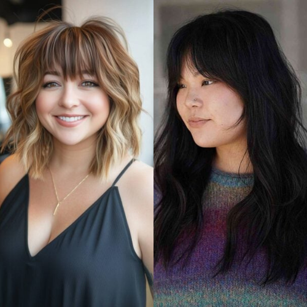
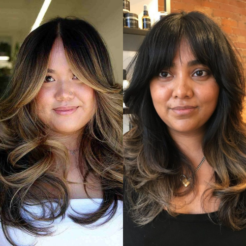
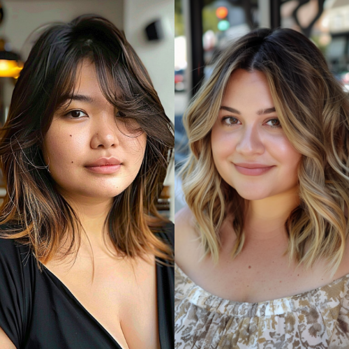
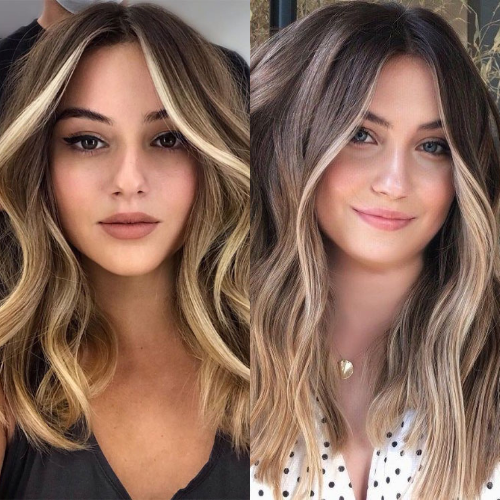

Having a chubby face is beautiful, and the right haircut can enhance your features while adding dimension and balance to your look. Whether you want a slimming effect, a stylish update, or a low-maintenance haircut, there are plenty of trendy options to choose from in 2025. Here are the best haircuts for a chubby face that will flatter your face shape and elevate your style.
Long layers create movement and add an elongating effect to your face. This haircut is perfect for those who want to maintain length while softening their facial features. It works well with both straight and wavy textures, making it a versatile choice.
The lob is a timeless and trendy haircut that falls just below the shoulders. It frames the face beautifully and can be styled in various ways, such as waves, sleek straight hair, or soft curls, to create a more defined and structured appearance.
Curtain bangs are making a huge comeback in 2025! Paired with a layered haircut, they help create a framing effect that slims down the face while maintaining a chic and effortless look.
If you're feeling bold, a pixie cut with side-swept bangs can be a game-changer. The asymmetrical angles add definition to your face, making it appear longer and more sculpted. This style is perfect for those who love a modern and edgy vibe.
An asymmetrical bob is a stylish option that features one side longer than the other. This creates an illusion of a more structured face and provides a contemporary, fashion-forward appearance.
The shag cut with soft waves is ideal for adding texture and volume while maintaining a light and airy feel. It’s perfect for those who want a playful yet flattering haircut that doesn’t overpower their facial features.
Face-framing layers enhance the natural contours of your face by drawing attention to your best features. Whether styled straight or with waves, this haircut offers a slimming effect while keeping the hair light and flowy.
A deep side part instantly changes the way your face shape appears. When combined with long hair, it adds asymmetry, making your face look longer and more balanced.
Consider Your Hair Texture: Choose a style that works with your natural hair type to make styling easier.
Go for Volume and Layers: Avoid overly blunt cuts, as they may emphasize roundness.
Experiment with Bangs: Side bangs, curtain bangs, or wispy bangs can make a huge difference in balancing facial proportions.
Opt for Balayage or Highlights: Lighter shades around the face can add dimension and enhance the overall look.
With these stylish and flattering haircuts, you can confidently choose a look that enhances your beauty. Whether you prefer long, short, or medium-length styles, there’s a perfect haircut for every chubby face in 2025!
   